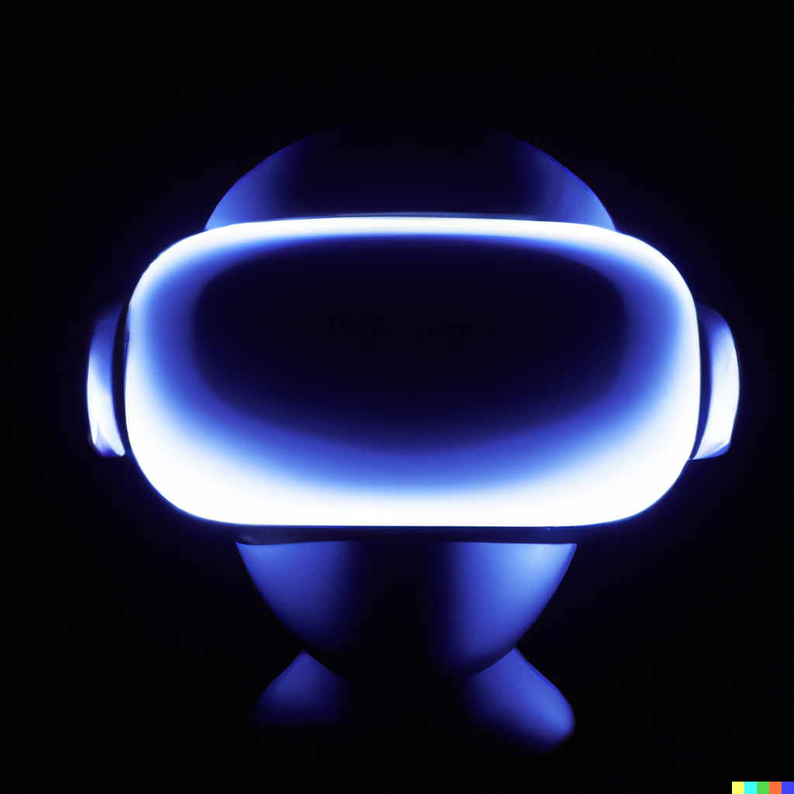
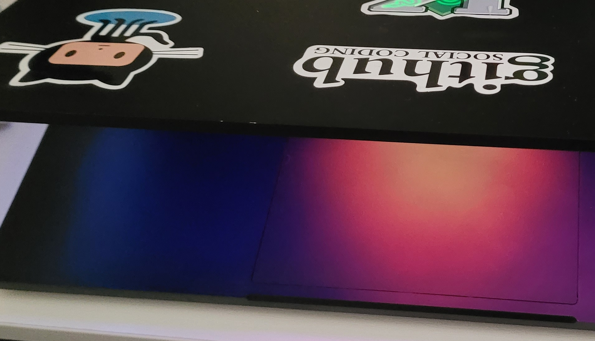
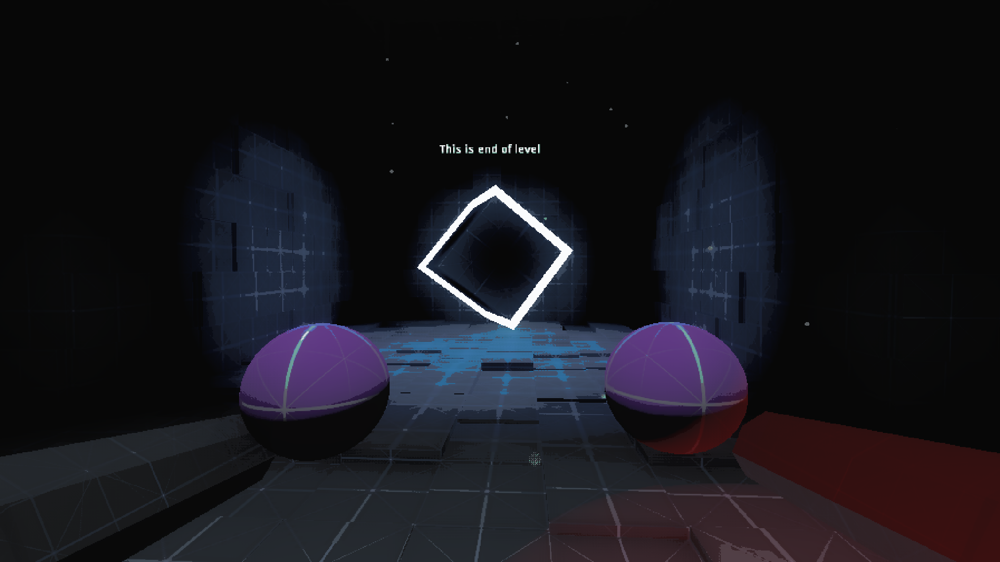

CameronDugan.com
Stats -> In 2 minutes you can read this article with 387 words
Developing a PC + VR game with Godot
A long Journey
Godot: Empowering VR Development
Godot, an open source game engine, became my companion throughout this journey. With its powerful features and intuitive workflow, Godot provided the ideal platform for creating an immersive VR game. Its flexible architecture allowed me to customize the game mechanics, visuals, and audio to match my vision, resulting in a truly unique VR experience.

Crafting Immersive Gameplay
Designing captivating gameplay in a VR environment requires meticulous attention to detail. I focused on creating an immersive experience that would transport players into a thrilling virtual world. By leveraging Godot's robust scripting capabilities, I meticulously crafted interactions, mechanics, and challenges that would engage players on a deeper level, making every moment in the game memorable.
Optimizing Performance for VR
Optimizing performance is crucial for a smooth and enjoyable VR experience. Through careful optimization techniques, I ensured optimal frame rates and minimal latency, allowing players to fully immerse themselves in the virtual world. From efficient resource management to rendering optimizations, every aspect of the game was fine-tuned to deliver a seamless and immersive VR experience.

Integrating Oculus API
To leverage the full potential of Oculus VR hardware, I utilized a dedicated Godot plugin that provided seamless integration with the Oculus API. This integration allowed me to tap into the unique features and capabilities of Oculus devices, enhancing the overall VR experience. With the plugin, I could access essential functions like head tracking, hand gestures, and controller input, ensuring a more immersive and interactive gameplay experience.

In conclusion, this post explored the exciting journey of developing an immersive VR game using open source technologies and the powerful Godot game engine. By embracing the potential of open source and harnessing the capabilities of Godot, I brought my vision to life, creating a VR experience. This project exemplifies the endless possibilities and creative freedom that open source game development offers in the world of virtual reality.